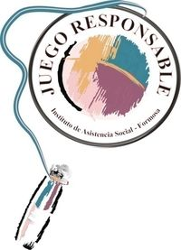

Funciones del IAS
La finalidad del Instituto de Asistencia Social de la Provincia de Formosa es maximizar las utilidades, bajo una administración transparente y eficaz para contribuir a la acción social de toda la provincia.
- Regulacion y control de juegos de azar en la provincia
- Fiscalizacion de salas de juego y casinos
- Otorgamiento de licencias y habilitaciones
- Programas de juego responsable
- Destino de fondos para programas sociales
- Compromiso con la Responsabilidad Social
- Prevencion de ludopatía: Es fundamental educar sobre los riesgos del juego, establecer límites estrictos de tiempo y dinero, y fomentar el ocio saludable.
- Promocion de juego responsable: Busca prevenir la adicción y fomentar conductas lúdicas saludables, estableciendo límites de tiempo y dinero.
- Proteccion de menores: Es un conjunto de medidas legales, sociales y administrativas destinadas a garantizar los derechos de niños, niñas y adolescentes, previniendo abusos, violencia, explotación y negligencia.
- Apoyo a programas comunitarios:El apoyo a programas comunitarios incluye financiación, asistencia técnica y recursos para proyectos sociales, culturales y productivos que buscan el desarrollo local y la inclusión.
- Transparencia en la gestion:La transparencia en la gestión pública es el principio y obligación de los gobiernos de abrir su información, decisiones y uso de recursos al escrutinio ciudadano, fomentando la rendición de cuentas, la confianza pública y la lucha contra la corrupción.
